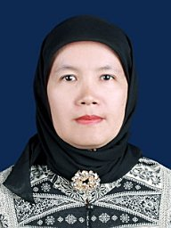

Tim Peneliti Riset
Kolaborasi akademisi dan peneliti Multidisiplin dari Universitas Negeri Medan dalam kajian dampak pencemaran mikroplastik.
Dr. Rahmatsyah, M.Si.
Jurusan Fisika, FMIPA
Universitas Negeri Medan

Dr. Rita Juliani, S.Si., M.Si.
Jurusan Fisika, FMIPA
Universitas Negeri Medan
Dr. Agung Setia Batubara, S.Pi., M.Si.
Jurusan Biologi, FMIPA
Universitas Negeri Medan

Sri Aningsih, M.Si.
Jurusan Fisika, FMIPA
Universitas Negeri Medan
Riri Syavira, M.Sc.
Jurusan Kimia, FMIPA
Universitas Gadjah Mada